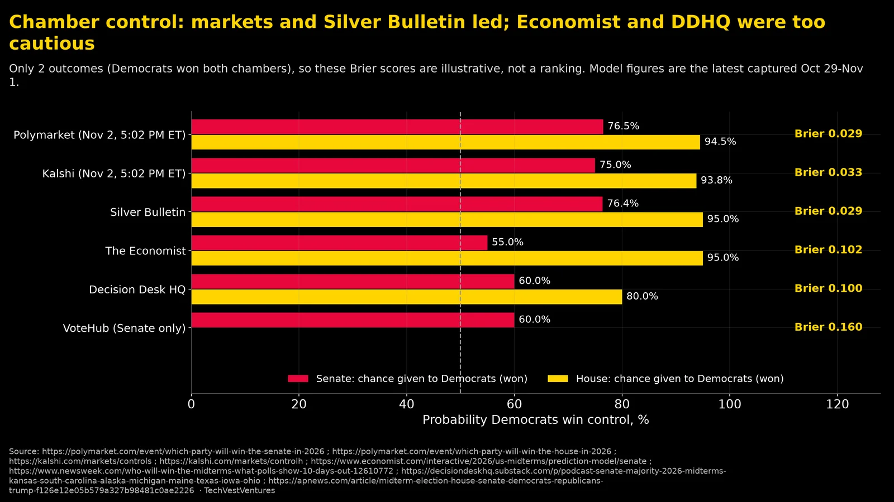

Markets vs ModelsTVV RISK CENTER
Chamber control against the forecast models captured before the vote. Only 2 outcomes, so illustrative only.

Source: https://polymarket.com/event/which-party-will-win-the-senate-in-2026 https://polymarket.com/event/which-party-will-win-the-house-in-2026 https://kalshi.com/markets/controls https://kalshi.com/markets/controlh https://www.economist.com/interactive/2026/us-midterms/prediction-model/senate https://www.newsweek.com/who-will-win-the-midterms-what-polls-show-10-days-out-12610772 https://decisiondeskhq.substack.com/p/podcast-senate-majority-2026-midterms-kansas-south-carolina-alaska-michigan-maine-texas-iowa-ohio https://apnews.com/article/midterm-election-house-senate-democrats-republicans-trump-f126e12e05b579a327b98481c0ae2226